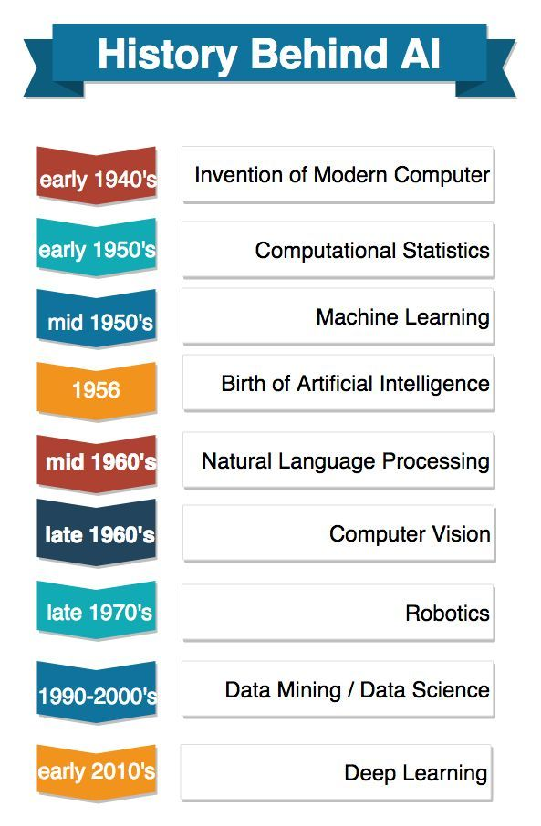

The concept of inanimate objects endowed with intelligence has been around since
ancient times. The Greek god Hephaestus was depicted in myths as forging robot-like servants out of
gold. Engineers in ancient Egypt built statues of gods animated by priests. Throughout the
centuries, thinkers from Aristotle to the 13th century Spanish theologian Ramon Llull to René
Descartes and Thomas Bayes used the tools and logic of their times to describe human thought
processes as symbols, laying the foundation for AI concepts such as general knowledge
representation. The late 19th and first half of the 20th centuries brought forth the foundational work
that would
give rise to the modern computer. In 1836, Cambridge University mathematician Charles Babbage and
Augusta Ada Byron, Countess of Lovelace, invented the first design for a programmable machine. In
the 1940s, Princeton mathematician John Von Neumann conceived the architecture for the
stored-program computer -- the idea that a computer's program and the data it processes can be kept
in the computer's memory. And Warren McCulloch and Walter Pitts laid the foundation for neural
networks.With the advent of modern computers, scientists could test their ideas about machine
intelligence.
One method for determining whether a computer has intelligence was devised by the British
mathematician and World War II code-breaker Alan Turing in 1950. The Turing Test focused on a
computer's ability to fool interrogators into believing its responses to their questions were made
by a human being.The modern field of artificial intelligence is widely cited as starting in 1956 during
a summer
conference at Dartmouth College. Sponsored by the Defense Advanced Research Projects Agency (DARPA),
the conference was attended by 10 luminaries in the field, including AI pioneers Marvin Minsky,
Oliver Selfridge and John McCarthy, who is credited with coining the term artificial intelligence.
Also in attendance were Allen Newell, a computer scientist, and Herbert A. Simon, an economist,
political scientist and cognitive psychologist, who presented their groundbreaking Logic Theorist, a
computer program capable of proving certain mathematical theorems and referred to as the first AI
program.In the wake of the Dartmouth College conference, leaders in the fledgling field of AI
predicted that
a man-made intelligence equivalent to the human brain was around the corner, attracting major
government and industry support. Indeed, nearly 20 years of well-funded basic research generated
significant advances in AI: For example, in the late 1950s, Newell and Simon published the General
Problem Solver (GPS) algorithm, which fell short of solving complex problems but laid the
foundations for developing more sophisticated cognitive architectures; McCarthy developed Lisp, a
language for AI programming that is still used today. In the mid-1960s MIT Professor Joseph
Weizenbaum developed ELIZA, an early natural language processing program that laid the foundation
for today's chatbots.But the achievement of artificial general intelligence proved elusive, not imminent,
hampered by
limitations in computer processing and memory and by the complexity of the problem. Government and
corporations backed away from their support of AI research, leading to a fallow period lasting from
1974 to 1980 and known as the first "AI Winter." In the 1980s, research on deep learning techniques
and industry's adoption of Edward Feigenbaum's expert systems sparked a new wave of AI enthusiasm,
only to be followed by another collapse of government funding and industry support. The second AI
winter lasted until the mid-1990s..

AI In Security
AI and machine learning are at the top of the buzzword list security vendors use today to
differentiate their offerings. Those terms also represent truly viable technologies. Artificial
intelligence and machine learning in cybersecurity products are adding real value for security teams
looking for ways to identify attacks, malware and other threats.
Organizations use machine learning in security information and event management (SIEM)
software and related areas to detect anomalies and identify suspicious activities that indicate
threats. By analyzing data and using logic to identify similarities to known malicious code, AI can
provide alerts to new and emerging attacks much sooner than human employees and previous technology
iterations. As a result, AI security technology both dramatically lowers the number of false
positives and gives organizations more time to counteract real threats before damage is done.
The maturing technology is playing a big role in helping organizations fight off cyberattacks.